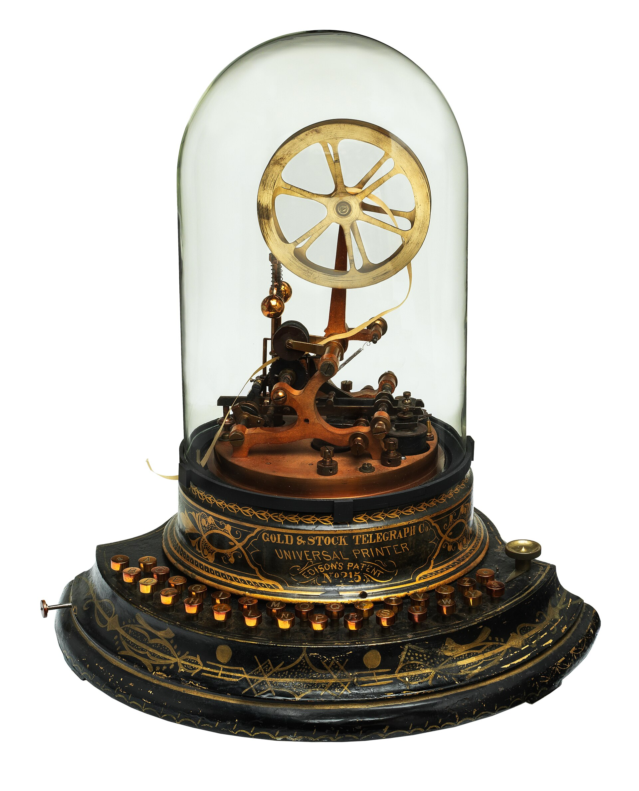
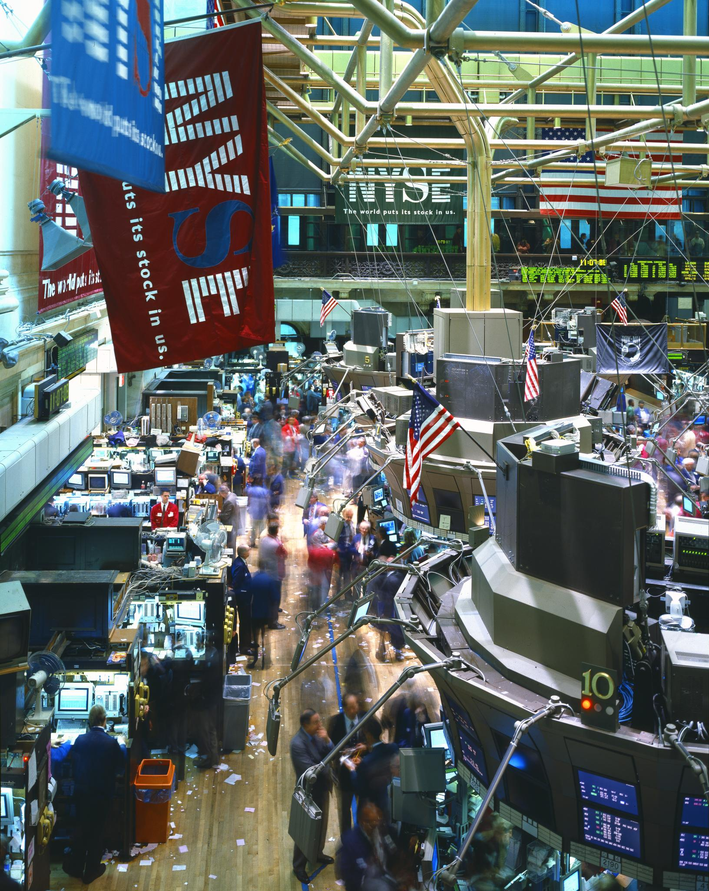

הגאות והגלים
ההשפעה של שוק ההון על מסלולי ההשקעה שלנו. גם אתם החלטתם לאחרונה להעביר את כל מסלולי ההשקעה ל־S&P 500? כדאי לזכור את 2022.

הזנב שמכשכש במסלולי החיסכון
מי מבינכם זוכר את הטלטלה של שווקי המניות בשנת 2022? מרבית המדדים העולמיים סיימו אז את השנה בתשואה שלילית, כאשר ה־S&P 500 ירד בכ־20% והנאסד"ק 100 צנח ב־33%.
עם זאת, המהפך מתחילת 2023 היה חד. העליות יוצאות הדופן בשנה וחצי האחרונות בשווקי המניות העולמיים בכלל, ובסקטור הטכנולוגיה בפרט, גרמו ללקוחות לשכוח לגמרי את התנודתיות והסיכונים הקיימים בשוק ההון. לקוחות מבוגרים וצעירים כאחד מבקשים להעביר את קרן הפנסיה, קופת הגמל או קרן ההשתלמות שלהם למסלול עוקב S&P 500 או למסלולי טכנולוגיה, בלי לתת את הדעת על אחוז החשיפה של כלל התיק שלהם למניות ולמט"ח, ובלי התאמה ראויה של הסיכון לטווח ההשקעה.
אין ספק שלאורך שנים השקעה במסלולי מניות הניבה לחוסכים תשואות גבוהות מהמסלולים הכלליים. הבעיה תתחיל כשיגיע תיקון או משבר כמו ב־2022, כזה שנמשך תקופה ארוכה. אז הרגש והפסיכולוגיה ישחקו תפקיד מרכזי: פחד, חמדנות, תקווה וחרטה יכולים להוביל להחלטות שאינן תמיד רציונליות.
איך יתמודדו לקוחות עם פנסיה שנחתכת ברבע כשהם רגע לפני פרישה? איך יתמודדו עם קרן השתלמות ששוויה צנח בשליש, כשהם בנו עליה כדי לעזור לילדים לקנות דירה? מי שהעביר את החסכונות ל־100% מניות בלי ליווי של איש מקצוע עלול למצוא את עצמו, בשיא המשבר הבא, עובר למסלול שמרני ומקבע את ההפסד לתמיד.
נכון לסגירת המסחר ב־30 בדצמבר 2022. מקור הנתונים: FactSet.



כולנו נהיינו יותר דיגיטליים
בשנים האחרונות אנחנו עדים לגאות מרשימה בהתעניינות ובהבנה של לקוחות פרטיים בשוק ההון. הגאות הזו שינתה את התנהגות הצרכנים, את המסחר העצמאי, את בחירת מוצרי ההשקעה ואת בחירת המסלולים במוצרי החיסכון. היא נגרמה מעליות חדות בשווקים, מריבית נמוכה ומחדשנות טכנולוגית, במיוחד בתקופת הקורונה.
הסגרים והעבודה מרחוק הגבירו את הביקוש לשירותים דיגיטליים, לענן ולפלטפורמות עבודה מרחוק. מניות של חברות כמו אפל, אמזון, מיקרוסופט וזום עלו משמעותית והפכו לאטרקטיביות במיוחד, והמשקיעים הגבירו את החשיפה אליהן.
האבולוציה של טרנד
העליות החדות חייבו את הגופים המוסדיים להתאים את עצמם לטעם הלקוחות. קרנות פנסיה, קופות גמל וקרנות השתלמות התחילו להציע מסלולים שעוקבים אחרי מדד ה־S&P 500, כאילו היה זה המסלול הכללי החדש.
בשלב הבא, בעקבות נסיקת מניות הטכנולוגיה, הם החלו להציע גם השקעות ממוקדות במגזר הזה: מסלולים שעוקבים אחרי מדדים כמו NASDAQ 100, או משלבים תתי־סקטורים כמו שבבים ובינה מלאכותית.
המלצות לחוסכים ולמשקיעים
פאסיבי או אקטיבי. מחקרים מראים שקשה מאוד להכות את המדדים לאורך זמן. עם זאת, ניהול פאסיבי לא צריך לבוא במקום ניהול אקטיבי אלא לצדו. האיזון בין השניים מאפשר גמישות ופיזור סיכונים.
יהיו ירידות. נצלו אותן. אי אפשר לתזמן את היציאה מהשוק רגע לפני משבר, כמו שאי אפשר לתזמן את הכניסה רגע לפני העלייה. משברים מייצרים הזדמנות למי שטווח ההשקעה שלו ארוך, וכאב לב למי שהטווח שלו קצר.
בונים הגנה. אירוע אישי לא צפוי עלול לאלץ אתכם לממש את התיק שבניתם במשך שנים. חשוב לוודא עם בעל מקצוע שאתם ובני המשפחה מכוסים ביטוחית, וכך תגנו גם על ההשקעות.
גיוון ופיזור. ודאו שהתיק מגוון ומאוזן, ואינו מוטה לסקטור אחד, טרנדי ככל שיהיה.
איש מקצוע. היעזרו בבעל רישיון עם ניסיון בשוק ההון, שיאבחן את התיק הפיננסי והפנסיוני שלכם, יתאים את רמת הסיכון לאופי ולטווח ההשקעה, ויעזור לשמור על קור רוח בזמן משבר.
לסיכום
הגאות בשוק ההון בשנים האחרונות השפיעה משמעותית על בחירת מסלולי ההשקעה במוצרי החיסכון: המעבר למניות, החיפוש אחר תשואות גבוהות והדגש על טכנולוגיה. השקעה מוצלחת לאורך זמן מחייבת ניהול סיכונים מושכל וגיוון, ולכן כדאי להיות מוכנים לתנודות ולהתאים את התיק הפנסיוני והפיננסי בהתאם.
המאמר אינו ייעוץ השקעות ואינו תחליף להתאמה אישית לנתונים ולצרכים של כל אדם.